Die Insel der Götter – und voller Alltags-Rätsel. Keine Sehenswürdigkeiten, keine Tipps: nur Dinge, die mir auf Bali auffielen und eine neugierige Frage auslösten, der ich dann nachgegangen bin. Den Anfang machen eine berühmte Kaffeebohne mit ungewöhnlichem Weg und ein einzelner Hahn am Straßenrand. ☕🐓
Warum ist der teuerste Kaffee der Welt durch eine Schleichkatze gegangen?
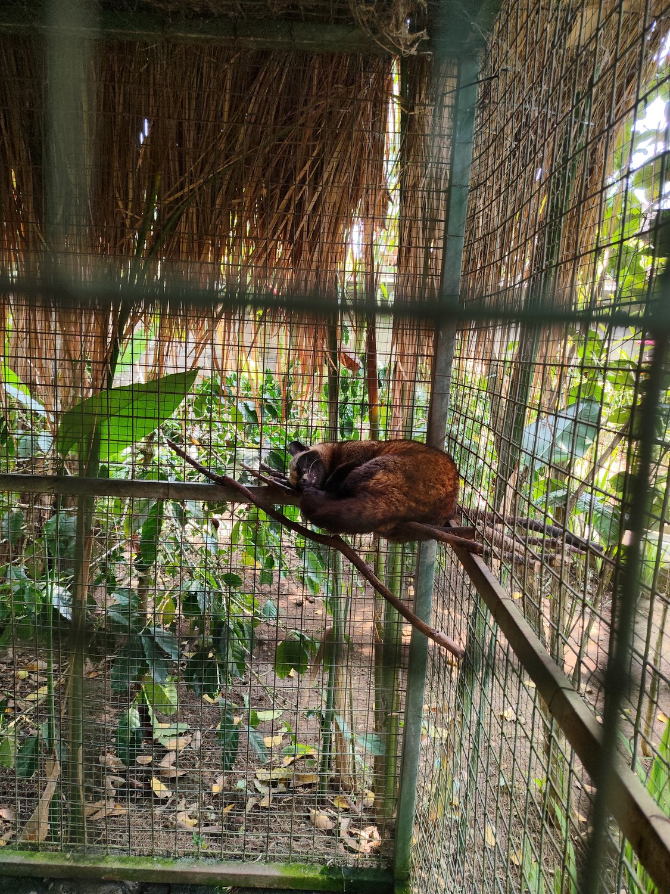
Die „Kaffee-Produzentin": eine Luwak (Fleckenmusang) im Gehege der Plantage – ein Anblick, der nachdenklich macht.
Auf meiner ersten Kaffeeplantage auf Bali durfte ich Bohnen über dem Feuer rösten und eine ganze Reihe winziger Gläser verkosten. In einem davon: der berühmte Luwak-Kaffee, der teuerste Kaffee der Welt. Sein Geheimnis ist … sagen wir: speziell.
Der Luwak ist kein Ort und keine Marke, sondern ein Tier: die Fleckenmusang, eine kleine Schleichkatze. Mit feiner Nase frisst sie nur die reifsten Kaffeekirschen. Das Fruchtfleisch verdaut sie, die harten Bohnen nicht – die wandern durch ihren Verdauungstrakt, wo Enzyme ihnen einen Teil der Bitterstoffe nehmen, und kommen am anderen Ende wieder heraus. Dort werden sie eingesammelt, gründlich gewaschen, getrocknet und geröstet. Das Ergebnis: ein besonders milder, säurearmer Kaffee.
Die Luwak selbst ist ein scheues, nachtaktives Tier, das eigentlich in den Baumkronen lebt und sich von reifen Früchten ernährt. Dass ausgerechnet dieser kleine, verschlafene Waldbewohner zur Galionsfigur eines weltweiten Luxusprodukts wurde, hat durchaus etwas Absurdes – und sagt am Ende vielleicht mehr über uns Menschen aus als über das Tier.
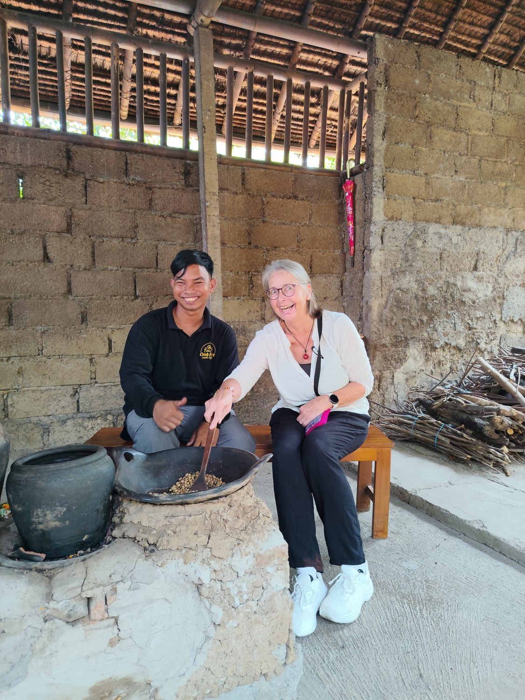
Auf der Plantage durfte ich selbst rösten – über offenem Feuer, von Hand gewendet.
Und warum ist er so teuer? Weil er selten und mühsam ist: Man kann ihn nicht ernten, man muss ihn … auflesen. Als teuerster Kaffee der Welt erzielt er schwindelerregende Preise – je nach Herkunft von rund hundert bis mehreren hundert Euro pro Kilo, für „wild" gesammelte Bohnen sogar noch weit mehr.
Am schönsten finde ich die Entstehungsgeschichte: Sie beginnt in der Kolonialzeit. Die Niederländer legten im 19. Jahrhundert riesige Kaffeeplantagen in Indonesien an – und verboten den einheimischen Bauern, sich von den eigenen Bohnen auch nur eine Tasse abzuzweigen. Die fanden einen Ausweg: Zwischen den Sträuchern lagen die von der Luwak ausgeschiedenen Bohnen – und die „gehörten" niemandem. Die Bauern sammelten sie, wuschen sie, rösteten sie – und stellten verblüfft fest, dass dieser „Resten-Kaffee" besonders gut schmeckte. So wurde aus der Not der ärmsten Arbeiter der teuerste Kaffee der Welt. Aus der kuriosen Entdeckung ist längst ein weltweites Geschäft geworden – mit allem, was Ruhm und Geld aus einer guten Geschichte machen: im Schönen wie im Fragwürdigen.
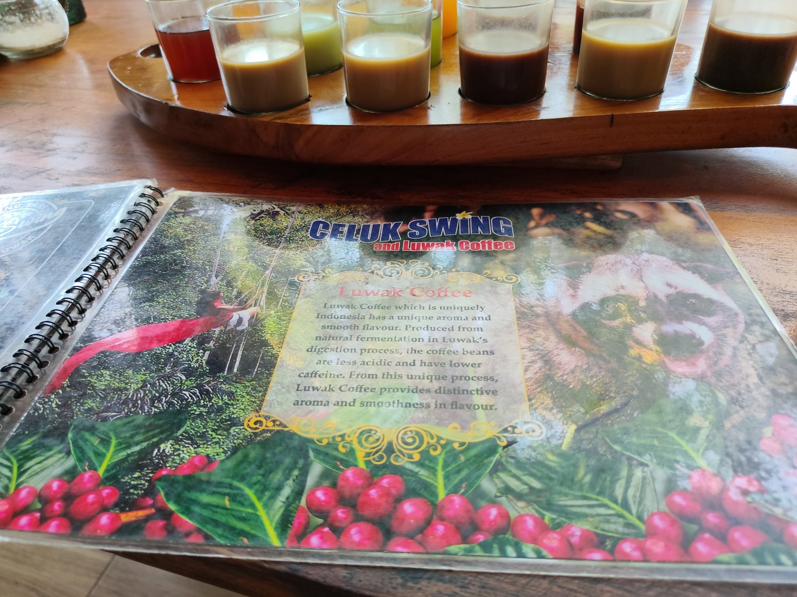
Die Verkostung: eine ganze Reihe kleiner Gläser – darunter der berühmte Luwak-Kaffee.
Und wie schmeckt er nun? Tatsächlich auffallend weich und rund, fast ein wenig schokoladig, ohne die übliche Säurespitze. Interessant – aber, ehrlich gesagt, kein Geschmackswunder, für das ich den Rest meines Lebens sparen müsste. 😊
Und doch bleibt mir der Kaffee ein wenig im Hals stecken. Denn der Ruhm hat eine dunkle Seite: Beim ursprünglichen, wilden Luwak-Kaffee sucht sich das Tier seine Kirschen frei im Wald. Die Nachfrage aber hat ganze Farmen entstehen lassen, in denen Schleichkatzen in engen Käfigen gehalten und mit Kaffeekirschen vollgestopft werden – Enge, Stress, einseitige Kost. Kritiker bemängeln zudem, dass viel als „wild" verkaufter Luwak-Kaffee in Wahrheit von solchen Käfigtieren stammt. Ich habe auf der Plantage selbst eine Schleichkatze im Gehege gesehen – und das hat meine Freude am Exotischen gründlich relativiert.
Muss man das probiert haben? Ich bin froh, es einmal verstanden zu haben – und ebenso froh, dass ich jetzt genau weiß, was hinter dem schönen Wort „der teuerste Kaffee der Welt" steckt.
Der teuerste Kaffee der Welt verdankt seinen Ruhm einem Tier, das die Bohnen erst einmal … wieder ausscheidet. Wer hätte das gedacht?
🐓 Die Hähne
Warum sitzt an Balis Straßenrand überall ein einzelner Hahn unter einem Korb?
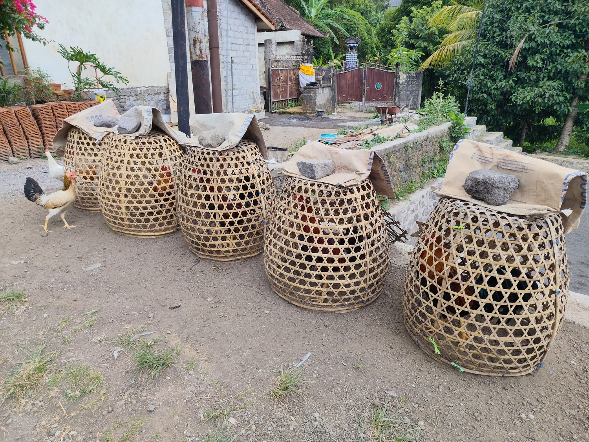
Am Straßenrand in Sidemen: unter jedem Bambuskorb ein einzelner, prächtiger Hahn.
Auf meinem ersten Spaziergang durch Sidemen fiel es mir überall auf: Vor den Häusern, an Mauern, am Straßenrand stehen geflochtene Bambuskörbe, umgestülpt wie kleine Glocken. Und unter jedem sitzt – würdevoll und für sich – ein Hahn. Nicht zwei, nicht eine ganze Hühnerschar. Immer ein einzelner, prächtiger Hahn. Warum nur?
Die harmlose Antwort zuerst: Die Körbe heißen kurungan, und die Männer stellen ihre liebsten Hähne darunter an den Weg, damit sie Sonne, Luft und vor allem das Leben der Straße abbekommen – Menschen, Mopeds, andere Hähne in sicherer Entfernung. Ein Hahn, der viel sieht, bleibt ruhig und selbstbewusst. Getrennt gehalten werden sie, damit sie sich nicht gegenseitig verletzen. Und das tägliche Umsetzen, Füttern und Streicheln ist für balinesische Männer ein geliebtes Ritual – ein bisschen Hobby, ein bisschen Stolz, ein bisschen Gesellschaft.
Morgens ist das Dorf voll von ihrem Krähen, und immer wieder sieht man Männer, die ihren Hahn behutsam aus dem Korb heben, ihn wiegen, sein Gefieder glätten und ihm gut zureden wie einem Sportler vor dem Wettkampf. Man kennt die Tiere, man vergleicht sie, man ist stolz auf sie – das Umsetzen der Körbe wird so zum kleinen gesellschaftlichen Treffen am Wegrand.
Nur: Das sind keine Hühner für den Kochtopf. Viele dieser Tiere werden über Jahre gehegt und verwöhnt – denn sie sind Kampfhähne. Und damit beginnt die eigentliche Geschichte hinter den hübschen Körben.
Im balinesischen Hinduismus gibt es einen heiligen rituellen Hahnenkampf: tabuh rah, wörtlich „Blut vergießen". Bevor eine wichtige Tempelzeremonie beginnen darf, muss Blut auf die Erde fließen – als Opfer an die Bhuta Kala, die ruhelosen Geister der Unterwelt. Besänftigt stören sie die heilige Feier nicht. Traditionell genügen drei kurze Kämpfe; mancherorts heißt es, keine große Zeremonie dürfe beginnen, bevor das Blut von mindestens drei Hähnen geflossen ist. Der Brauch ist uralt und fest mit der Religion der Insel verwoben.
Doch neben dem heiligen Ritual wuchs sein weltlicher Zwilling: tajen, der Hahnenkampf mit Wetteinsatz. Männer drängen sich im Kreis, Geld wechselt die Hand, die Stimmung kocht. Und hier wird es heikel: Glücksspiel ist in Indonesien gesetzlich verboten – tajen ist damit offiziell illegal. In der Praxis herrscht ein stiller Burgfriede: das Rituelle wird geduldet, das Wetten geflissentlich übersehen. 2025 wurde auf Bali sogar diskutiert, den Hahnenkampf als „kulturelle Attraktion" (ohne Glücksspiel) einzustufen – und ob man tajen nicht lieber ganz legalisieren sollte.
Für Außenstehende ist das viel auf einmal: Hingabe und Härte, heiliges Opfer und verbotene Wette – alles unter einem hübschen Bambuskorb. Der berühmte Ethnologe Clifford Geertz hat dem balinesischen Hahnenkampf einen ganzen Essay gewidmet („Deep Play", 1973): Für ihn war er ein Spiegel der Gesellschaft selbst – der Hahn eine symbolische Verlängerung von Stolz und Status seines Besitzers. Schon das balinesische Wort für Hahn, sabung, wird im Alltag auch für „Held", „Krieger" oder „Draufgänger" gebraucht – der Mann und sein Hahn sind sprachlich kaum zu trennen. Ich muss die Grausamkeit gegenüber den Tieren nicht gutheißen, um die kulturellen Schichten darunter bemerkenswert zu finden – und wie beim Luwak-Kaffee schaue ich lieber genau hin, als weg.
Ein einzelner Hahn unter einem Korb am Straßenrand – und darunter steckt gleich die halbe balinesische Weltordnung: den Göttern ein Opfer, den Männern ein Stolz, dem Gesetz ein Problem. Wer hätte das gedacht?
🐕 Die Hunde der Straße
Warum gehört der Hund auf Bali der ganzen Straße – und in Seoul nur einer Familie?
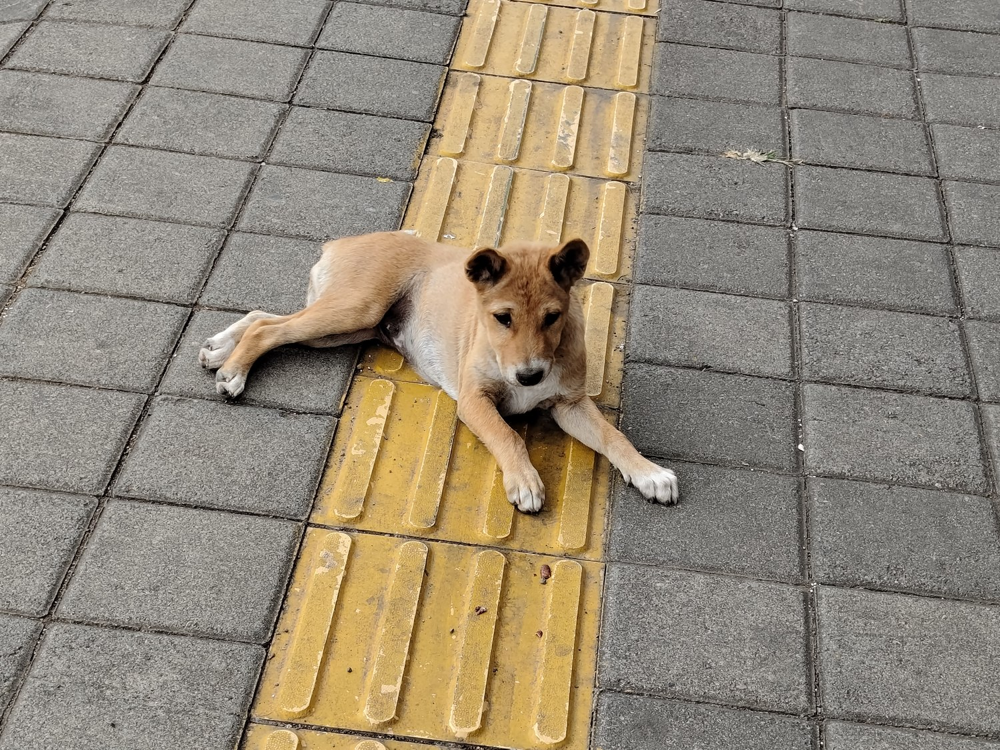
Satt, entspannt und mitten auf dem Blindenleitstreifen: einer der freundlicheren Straßenhunde von Sidemen.
In Sidemen liegen sie überall: Hunde am Straßenrand, vor den Tempeln, mitten auf dem Gehweg. Viele sind dünn und struppig, manche sichtlich verwahrlost. Dieser hier aber lag satt und seelenruhig genau auf dem gelben Blindenleitstreifen und ließ sich von Mopeds und Menschen kein bisschen stören. Und plötzlich musste ich an Seoul denken – wo der Hund im eigenen Buggy spazieren gefahren wird.
In Korea hatte ich mich gewundert, wie sehr der Hund dort Familienmitglied ist: Hundecafés, winzige Kleidchen, kleine Buggys neben den Kinderwagen (darüber habe ich in der Korea-Reihe geschrieben). Auf Bali ist es fast das Gegenteil. Derselbe beste Freund des Menschen – und doch zwei völlig verschiedene Welten. Wie kann das sein?
Zuerst die Überraschung: Der balinesische Straßenhund ist keine zufällig verwilderte Promenadenmischung, sondern eine der ältesten Hundepopulationen der Welt. Gentests zeigen eine enorme Vielfalt und eine Verwandtschaft mit Chow-Chow, Akita und sogar dem australischen Dingo – ein Hinweis auf sehr alte, ostasiatische Wurzeln. Manche Forscher vermuten, dass es schon Hunde auf Bali gab, bevor die Insel vor Tausenden von Jahren vom Festland getrennt wurde. Der „Bali-Hund" ist also fast ein lebendes Fossil, das frei durch die Dörfer streift.
Und er ist selten wirklich „herrenlos". Die meisten Hunde gehören lose zu einem Haus oder einem Dorf – sie bewachen das Grundstück, fressen die Küchenreste, halten Ratten und Schlangen fern. Viele Balinesen schätzen den Hund vor allem als Wächter. Darüber liegt eine stille, mystische Schicht: Mancherorts glaubt man, Hunde könnten Geister spüren – gute wie böse – und böse Mächte fernhalten; in alten Mythen führen zwei Hunde die Seelen der Verstorbenen ins Totenreich. Für den Alltag darf man das nicht überschätzen (Umfragen zeigen: die meisten sehen schlicht einen Wächter), aber es erklärt, warum der Hund hier dazugehört, ohne je verwöhntes Schoßtier zu sein.
Die Schattenseite ist nicht zu übersehen: Es sind einfach zu viele. Überpopulation, Hunger, Krankheiten. Und 2008 brach auf der Halbinsel Bukit die Tollwut aus und breitete sich über die ganze Insel aus. Die erste Reaktion der Behörden war grausam – Zehntausende Hunde wurden mit vergifteten Ködern getötet. Erst als das kaum half, kam die Wende: Die balinesische Tierschutzorganisation BAWA organisierte ab 2010 eine inselweite Impfkampagne, fing über zweihunderttausend freilaufende Hunde ein und impfte mehr als 70 Prozent – die Schwelle, ab der Tollwut zurückgedrängt wird. Dazu kamen Kastrationen und „Health Days". Langsam wird es besser, aber einfach ist es bis heute nicht.
Und deine Frage, ob hier noch Hundefleisch gegessen wird? Ehrlich: Diesen Handel gab es, versteckt unter dem Kürzel „RW" an manchen Garküchen. 2017 deckte eine Investigation sogar auf, dass ahnungslosen Touristen Hundefleisch als „Hähnchen-Satay" verkauft wurde. Aber: Seit 2023 hat Bali als erste Provinz Indonesiens ein Gesetz mit echten Strafen – Verkauf und Kauf von Hundefleisch sind seither strafbar, mit Haft und hohen Geldbußen. 2024 wurden bei Razzien Hunderte Fleischspieße beschlagnahmt. Verschwunden ist der Handel damit nicht über Nacht, aber er ist verboten und wird verfolgt. Gegessen wird Hundefleisch auf Bali heute also höchstens noch heimlich und illegal – nicht als selbstverständliches Gericht.
Und damit schließt sich der Kreis nach Seoul auf verblüffende Weise: Auch Südkorea hat 2024 beschlossen, den Verzehr von Hundefleisch zu beenden – bis 2027 soll er ganz Geschichte sein. Zwei Orte, die von zwei völlig verschiedenen Enden kommen – vom verwöhnten Familienhund und vom frei streunenden Wächter – und doch auf denselben Punkt zusteuern: der Hund gehört nicht auf den Teller.
Mein Straßenhund auf dem Blindenleitstreifen weiß von alldem nichts. Er hat einen vollen Bauch, einen warmen Stein und die ganze Straße für sich. Kein Buggy, kein Kleidchen – aber auch keine Leine. Vielleicht ist das seine eigene Art von Freiheit.
Derselbe Hund: in Seoul das verwöhnte Familienkind im Buggy, auf Bali der uralte Wächter der Straße – und, wenn man den Geschichten glaubt, sogar der Seelen. Wer hätte das gedacht?
💧 Heiliges Wasser & tausend Kameras
Warum wäscht dasselbe Quellwasser den Pilger rein – und füllt zugleich tausend Kameras?
Die Reihe der heiligen Wasserspeier im Pura Tirta Empul – Einheimische und Reisende, Gebet und Kameras in derselben Reihe.
Auf dem Rückweg vom Mount Batur hielt ich am Pura Tirta Empul, Balis berühmtem Wasser-Tempel. Ich wollte das Melukat erleben – die heilige Waschung. Und ich habe beides gefunden: einen der berührendsten Orte der Insel und, direkt daneben, einen der ehrlichsten Spiegel dafür, was Massentourismus mit einem heiligen Ort macht.
Zuerst das Schöne. Melukat ist die balinesisch-hinduistische Selbst-Reinigung mit heiligem Wasser (Tirtha). Man wäscht damit nicht nur den Körper, sondern vor allem Geist und Seele – man lässt los, was einen beschwert. Wasser ist für die Balinesen so zentral, dass ihr Glaube oft „Religion des heiligen Wassers" genannt wird. Man betet, bringt eine kleine Opfergabe dar und wandert dann die lange Reihe der steinernen Wasserspeier ab, hält unter jedem Strahl Kopf und Hände, atmet, betet. Zwei der Speier sind übrigens Totenzeremonien vorbehalten – die lässt man aus. Und das Schönste: Auch als Nicht-Hindu darf man teilnehmen.
Der Tempel ist wirklich alt: um 962 gegründet, rund um eine Quelle, die bis heute aus der Erde sprudelt. Die Legende erzählt, der Gott Indra habe seinen Stab in die Erde gestoßen und so eine Quelle des Unsterblichkeitswassers geschaffen, um seine vergifteten Krieger wiederzubeleben. Dieses Wasser ist Tirta Empul. Kein Wunder, dass Menschen seit über einem Jahrtausend hierherkommen.
Und dann die andere Seite – die, über die in den Hochglanzbroschüren niemand schreibt. Zur Mittagszeit ist es rappelvoll: Schlangen in nassen Klamotten, GoPros und Handys direkt neben betenden Einheimischen. Das Ritual kippt leicht ins Foto-Spektakel. Und es ist Schicht um Schicht durchkommerzialisiert: Eintritt, Sarong-Leihe, Schließfächer, Guides, und rundherum Stände, die einen gern am Ärmel ziehen. Der freundliche Mann, der mich so geduldig und liebevoll fotografiert hat – er tat es für Geld. 😄 Und umziehen musste ich mich in alten, nach Urin stinkenden Kabinen. 🙄 Größer hätte der Kontrast zum heiligen Quellwasser kaum sein können.
Aber – und das ist mir wichtig – ich nehme nichts davon übel. Geld hierzulassen ist richtig und gut; davon lebt der Erhalt des Tempels und vieler Familien. Dass hier wirklich alles vermarktet wird, erzählt für mich weniger von Gier als von etwas anderem: von einem Land, in dem viele Menschen jede Rupiah brauchen. Der Foto-Mann verkauft keine Abzocke, sondern seine Arbeit. Die hohen Tempelmauern sind alt und würdevoll; die Umkleide dahinter ist das, was eben übrig bleibt, wenn Hunderttausende kommen und wenig Geld da ist, es schön zu halten.
Spannend fand ich, dass auch die Einheimischen selbst mit dieser Spannung ringen. In der Tempelgemeinde Manukaya gilt: Die Touristenströme können die Heiligkeit des Ortes verunreinigen – und genau deshalb reinigen die Dorfbewohner ihren Tempel immer wieder mit eigenen Zeremonien (yadnya). Der Ort heilt sich gewissermaßen selbst von seinem eigenen Ruhm. Und seit 2025 gelten strengere Regeln für heilige Stätten: angemessene Kleidung, Sarong-Pflicht, kein Betreten der innersten Bereiche für Nicht-Gläubige, keine respektlosen Fotos.
Vielleicht ist das die eigentliche Lehre dieses Nachmittags: Das Heilige und das Geschäft stehen hier nicht an zwei getrennten Orten. Sie teilen sich dasselbe Becken. Dasselbe Wasser, das den Pilger reinwäscht, füllt die Instagram-Galerie. Und die leiseste Form von Respekt ist vielleicht, überhaupt zu merken, in welchem der beiden man gerade steht – und trotzdem die Hände unter den Strahl zu halten.
Ein Reinigungsort, tausend Jahre alt und tief heilig – und zugleich eine Touristenfabrik mit Eintritt, Sarong-Leihe und stinkender Umkleide. Beides ist wahr, im selben Becken. Wer hätte das gedacht?
🌸 Die Opfergaben
Warum legt man auf Bali überall kleine Opfer hin – und tritt sie dann einfach platt?
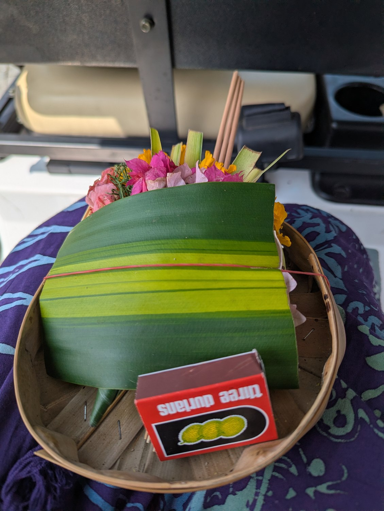
Ein canang sari – jeden Morgen frisch gemacht, dargebracht … und danach dem Alltag überlassen.
Vom ersten Tag an fiel es mir auf: Überall auf Bali liegen kleine Opfergaben. Auf Türschwellen, vor Läden, an Schreinen, auf dem Armaturenbrett im Auto – und mitten auf dem Gehweg. Kleine quadratische Schälchen aus Palmblatt, gefüllt mit Blüten, ein paar Körnern Reis, einem Räucherstäbchen. Und dann sehe ich, wie jemand achtlos darüberläuft, ein Hund daran schnuppert, ein Moped drüberrollt. So viel Sorgfalt – und gleich darauf plattgetreten. Wie passt das zusammen?
Das kleine Schälchen heißt canang sari. Es wird jeden Morgen frisch gemacht, meist von den Frauen, aus gefalteten Kokosblättern, bunten Blüten, ein paar Körnern Reis, manchmal einem Keks oder einer Münze, gekrönt von einem Räucherstäbchen und einem Spritzer heiligen Wassers. Sogar die Blütenfarben haben ihren Platz: Weiß gen Osten, Rot gen Süden, Gelb gen Westen, Blau gen Norden – jede Himmelsrichtung ein Gott. Und das Schönste: Es ist kein Bitten, sondern ein Danken. Kein „gib mir", sondern „danke für das, was ich habe".
Und warum darf man es dann zertreten? Weil die Gabe gar nicht das Schälchen ist. Die Götter nehmen die sari – die Essenz, den Duft, die Schönheit, die Hingabe des Machens. Sobald das Opfer dargebracht ist, hat der kleine Korb seine Aufgabe erfüllt. Was danach mit ihm geschieht – zertreten, weggefegt, vom Hund gefressen –, spielt keine Rolle mehr. Nicht der Gegenstand zählt, sondern die Geste. Und morgen früh liegt ein neuer da.
Dann habe ich gemerkt: Es gibt zwei Höhen. Die Opfer oben, auf den Schreinen und Mauern, sind für die Götter über uns. Die Opfer unten, auf dem Boden – man nennt sie segehan –, sind für die anderen: die bhuta kala, die niederen Geister, die Dämonen. Deshalb liegen manche ganz bewusst auf der Schwelle, am Boden, an der Kreuzung. Man beschenkt nicht nur den Himmel. Man beschenkt auch das Dunkel.
Und das ist der eigentliche Aha-Moment: Die Balinesen verehren nicht nur das Gute. Sie geben auch dem Bösen seinen Anteil – damit es Ruhe gibt. Das heißt Bhuta Yadnya, das Opfer an die Dämonen, und es gehört so selbstverständlich dazu wie das Gebet an die Götter. Alles hat zwei Seiten, Licht und Schatten (rwa bhineda), und beide brauchen ihren Platz, damit die Welt im Gleichgewicht bleibt.
Bei großen Zeremonien wird aus dem Blütenschälchen ein echtes Blutopfer: das mecaru (oder caru), bei dem rohes Fleisch und Blut dargebracht werden, oft von geopferten Tieren – ein uraltes Ritual, das die elementaren Kräfte besänftigen soll. (Der rituelle Hahnenkampf, von dem ich schon erzählt habe, gehört in genau diese Welt.) Und einmal im Jahr, am Vorabend von Nyepi, zieht die Insel mit riesigen Monsterfiguren aus Pappmaché – den ogoh-ogoh – durch die Straßen: laut, wild, furchterregend, um alles Negative aufzuscheuchen und zu vertreiben. Und danach? Wird es ganz still. Einen ganzen Tag lang steht Bali komplett still – kein Verkehr, kein Lärm, kein Licht.
Für mich, die aus einer Welt kommt, in der man das Böse wegsperrt und das Gute hochhält, ist das eine ganz andere Art zu denken: Hier bekommt beides einen Sitzplatz. Und das Heiligste, das man gibt, ist nicht einmal die Blume – sondern dass man sie jeden einzelnen Morgen neu macht und dann einfach loslässt.
Auf Bali betet man nicht nur zu den Göttern über sich – man füttert auch die Dämonen unter sich. Und das schönste Geschenk ist nicht die Opfergabe selbst, sondern die Hingabe, sie jeden Morgen neu zu machen und wieder herzugeben. Wer hätte das gedacht?
🌾 Reis & Subak
Warum teilen auf Bali nicht Ingenieure das Wasser für die Reisfelder – sondern Nachbarn, Priester und eine Göttin?
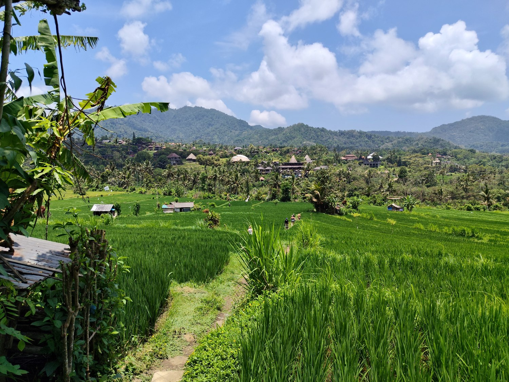
Die Reisterrassen von Sidemen – was aussieht wie ein schönes grünes Feld, ist ein tausend Jahre altes Wunderwerk.
Gestern war ich zu Fuß durch die Reisfelder von Sidemen unterwegs und dachte zuerst nur: ein wunderschönes, leuchtend grünes Feld. Dann habe ich verstanden, dass ich mitten in etwas viel Größerem stehe – halb Bewässerungssystem, halb Religion. Und dass ein Reisfeld auf Bali so ziemlich alles ist, nur nicht „einfach ein Acker".
Das satte Grün verdankt sich dem Subak. Seit über tausend Jahren – manche Quellen datieren es aufs 9. bis 11. Jahrhundert – leiten die Balinesen das Wasser von den Kraterseen und Bergquellen in einem feinen Netz aus Kanälen, Tunneln und kleinen Wehren hinab, von Feld zu Feld. Und das Erstaunliche: Kein Amt und kein Ingenieur verteilt dieses Wasser. Das machen die Bauern selbst – in Genossenschaften, die ebenfalls „Subak" heißen. Gemeinsam und erstaunlich gleichberechtigt entscheiden sie, wer wann flutet und wie viel jedem zusteht. Ein tausend Jahre altes Stück gelebte Basisdemokratie, mitten im Reisfeld.
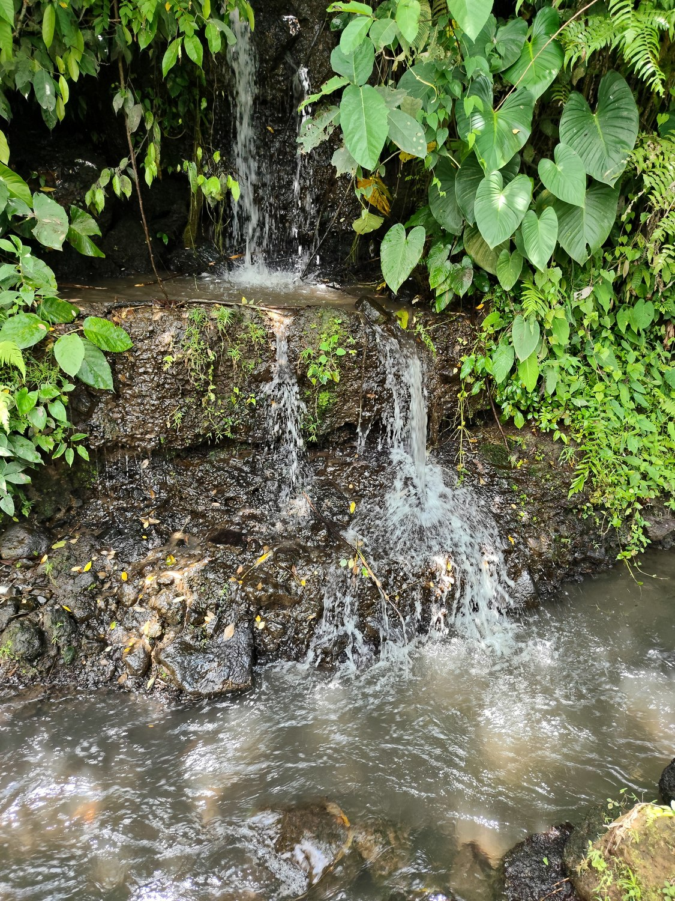
Überall plätschert Wasser von Feld zu Feld – das ist das Subak in Aktion.
Der eigentliche Taktgeber aber ist kein Rathaus, sondern der Wassertempel. An jeder wichtigen Verzweigung des Wassers steht einer; die Priester stimmen ab, wann gepflanzt und wann das Wasser weitergereicht wird. Mensch, Natur und Götter sitzen alle drei mit am Tisch. Dieses Prinzip hat sogar einen Namen: Tri Hita Karana, die „drei Quellen des Glücks" – Harmonie mit dem Göttlichen, mit den Menschen und mit der Natur. Als die UNESCO die Reisterrassen Balis 2012 zum Welterbe erklärte, würdigte sie ausdrücklich nicht die Technik, sondern genau diese gelebte Harmonie.
Und warum so viel Hingabe für ein Getreide? Weil Reis auf Bali kein bloßes Nahrungsmittel ist, sondern ein Geschenk der Götter. Über den Feldern wacht Dewi Sri, die Reis- und Fruchtbarkeitsgöttin – kleine Schreine für sie stehen mitten im Grün. Das Wasser wiederum kommt von Dewi Danu, der Göttin des Kratersees. Man sagt: Vernachlässigt man die Göttinnen, fließt kein Wasser und wächst kein Reis. Deshalb steckt Reis in fast jeder Opfergabe (ein paar Körner im canang sari – erinnert ihr euch?) und in fast jeder Zeremonie. Reis ist Leben – und das Reisfeld ist fast ein Tempel.
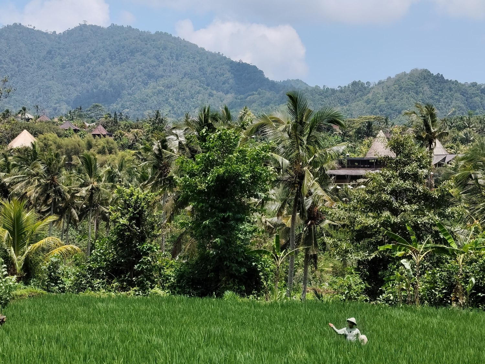
Ein Bauer bei der Arbeit – Hüter eines tausend Jahre alten Kreislaufs aus Wasser, Reis und Gebet.
Und jetzt kommt der Teil, der mich wirklich umgehauen hat. In den 1980er-Jahren haben Forscher – allen voran der Anthropologe Stephen Lansing – das Subak am Computer nachgebaut. Dabei kam Verblüffendes heraus: Die uralte, über die Tempel abgestimmte Planung, wann welche Felder bepflanzt werden und wann sie gemeinsam brachliegen, trifft fast punktgenau das Optimum zwischen zwei Zielen, die sich eigentlich widersprechen – genug Wasser für alle und möglichst wenig Schädlinge. Denn wenn benachbarte Felder zugleich geflutet und zugleich trockengelegt werden, nimmt man den Schädlingen die Lebensgrundlage. Ein System, das Priester über Jahrhunderte mit Ritual und Erfahrung gesteuert haben – und das sich als ökologisch genial erweist.
Fast hätte Bali das verloren. In den 1970ern drängte die „Grüne Revolution" die Bauern, ständig neue Hochertragssorten anzubauen, so oft wie möglich, mit viel Kunstdünger und Pestiziden – und die Tempel-Abstimmung einfach zu übergehen. Das Ergebnis: Das Wasser wurde knapp, und riesige Schädlingsplagen brachen aus. Erst als man zur alten, abgestimmten Ordnung zurückfand, beruhigte sich alles wieder. Manchmal weiß die Tradition mehr, als sie sagen kann.
Und doch steht das Subak heute unter Druck – und das sieht man in Sidemen mit bloßem Auge. Oberhalb der Felder wachsen Villen und Resorts in die Hügel; auf meinen Fotos vom Vortag thronen sie direkt über dem Grün. Reisland ist als Bauland oft ein Vielfaches wert, Wasser, das früher die Felder flutete, füllt heute auch Hotelpools, und viele Junge wollen nicht mehr Bauer sein. Jedes Jahr verschwinden Reisterrassen. Was die UNESCO schützt, ist also kein Museum, sondern ein lebendiges – und verletzliches – Gleichgewicht.
Seit ich das weiß, sehe ich ein Reisfeld nie wieder als „nur grün". Jeder Halm steht in einem Netz aus Nachbarn, Priestern, Göttinnen und Wasser, das seit tausend Jahren gespannt ist. Ich bin einfach durchgelaufen und habe die Ruhe genossen – und hatte doch ein ganzes Universum unter den Füßen.
Ein balinesisches Reisfeld ist kein Acker, sondern ein tausend Jahre altes Netzwerk aus Nachbarn, Tempeln und Göttinnen – dessen Weisheit die Wissenschaft erst spät als ökologisch genial erkannt hat. Wer hätte das gedacht?
♻️ Wohin mit dem Müll?
Warum liegt ausgerechnet im Paradies so viel Plastik in der Natur – wo doch jedes Haus und jeder Tempel blitzsauber gepflegt wird?
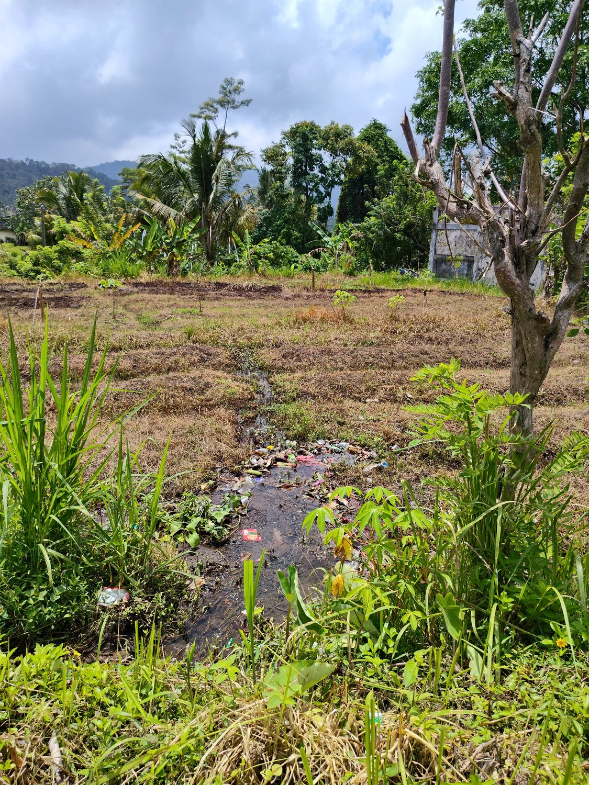
Derselbe Weg durch die Felder von Sidemen – und mitten im kleinen Wassergraben: Plastik.
Auf meinem Spaziergang durch die Reisfelder von Sidemen war nicht alles nur Postkarten-Grün. In den kleinen Wassergräben – genau denen, die das Leben auf die Felder tragen – trieb Plastik: Tüten, Verpackungen, Flaschen. Und mir ging die ehrliche Frage durch den Kopf, die mich schon den ganzen Tag begleitet hatte: Wohin eigentlich mit dem Abfall?
Denn oft gibt es darauf keine gute Antwort. In vielen Dörfern fährt keine Müllabfuhr vor; wo man den Abfall nicht verbrennt, landet er im nächsten Graben oder Fluss. Balis große Deponie – Suwung bei Denpasar, seit 1984 in Betrieb – ist seit Jahren hoffnungslos überfüllt, rund 1.000 Tonnen am Tag. 2026 wurde sie in Teilen geschlossen, und prompt türmte sich der Müll in Straßen und an Stränden. Insgesamt produziert Bali weit über eine Million Tonnen Abfall im Jahr – und ein großer Teil, je nach Quelle ein Drittel bis die Hälfte, wird gar nicht ordentlich entsorgt.
Aber der eigentliche „Wer hätte das gedacht"-Moment liegt tiefer – und er ist alles andere als ein Vorwurf. Denn die Balinesen sind kein unordentliches Volk, im Gegenteil: Ihre Höfe, Küchen und Tempel sind blitzsauber, jeden Morgen gefegt und mit Blüten geschmückt. Wie passt das zusammen?
Die Erklärung, die Fachleute oft geben: Bis vor wenigen Jahrzehnten war praktisch jede Verpackung auf Bali organisch. Essen, Gewürze, Opfergaben – alles wurde in Bananenblätter, Palmblätter, Kokosschalen gewickelt. Was man wegwarf, warf man guten Gewissens in die Natur: Es verrottete binnen Tagen und wurde wieder zu Erde. Es in einen Fluss zu geben war kein Frevel, sondern praktisch. Dann kam, innerhalb einer einzigen Generation, das Plastik – und ersetzte das Blatt. Die uralte, völlig vernünftige Gewohnheit blieb. Nur: Plastik verrottet nicht. Das Problem ist weniger Gleichgültigkeit als eine Welt, die sich schneller verändert hat als die Gewohnheiten darin.
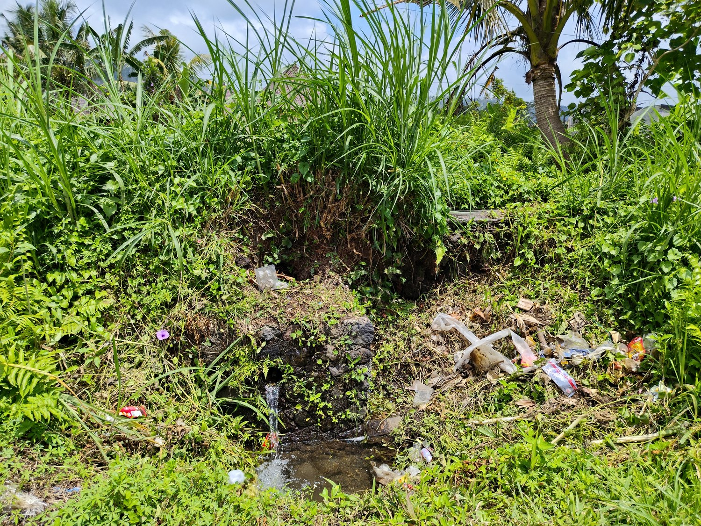
Klares Quellwasser – und direkt daneben der Plastikmüll. Beides im selben kleinen Graben.
Dazu kommt der Monsun: In der Regenzeit spülen die Flüsse ihren Müll ins Meer – und die Wellen werfen ihn an die Strände zurück, teils sogar von anderen Inseln herübergetragen. Manche Traumstrände versinken dann zeitweise im Plastik. Und ja, selbst die liebevollen kleinen Opfergaben tragen heute oft ein Plastikschälchen oder eine Folie in sich – das Heilige ist Teil des Problems geworden, ganz ohne böse Absicht.
Und doch gibt es Hoffnung, und sie kommt von den Jüngsten. Zwei Schwestern aus Bali, Melati und Isabel Wijsen, gründeten als Kinder (mit etwa 12 und 10 Jahren) die Bewegung Bye Bye Plastic Bags – und trugen ihren Protest bis vor die Regierung. 2019 verbot Bali Einweg-Plastiktüten, -strohhalme und Styropor; die Durchsetzung hinkt zwar hinterher, aber der Anfang ist gemacht. Und Initiativen wie Sungai Watch spannen inzwischen Hunderte Barrieren in die Flüsse, die das Plastik abfangen, bevor es das Meer erreicht.
Mich hat dieser Anblick nachdenklich gemacht – aber nicht überheblich. Denn das Plastik, das hier treibt, haben wir alle in die Welt gebracht; und wir Reisenden tragen jeden Tag unseren Teil dazu bei: jede Wasserflasche, jeder Strohhalm, jede Tüte. Es wäre zu billig, aus dem bequemen Abstand den Kopf zu schütteln. Die ehrlichere Frage ist die, die Bali gerade mit aller Kraft zu beantworten versucht – und die auch uns zu Hause angeht: Wohin eigentlich mit dem Abfall?
Der Müll im Paradies ist kein Zeichen von Gleichgültigkeit, sondern der Zusammenstoß einer einst perfekten Tradition – alles ins Blatt, alles zurück in die Natur – mit einem Material, das einfach nicht mehr vergeht. Wer hätte das gedacht?
🛶 Die Boote
Warum hat jedes Fischerboot in Amed Augen – und was haben sie mit einem Elefanten zu tun?
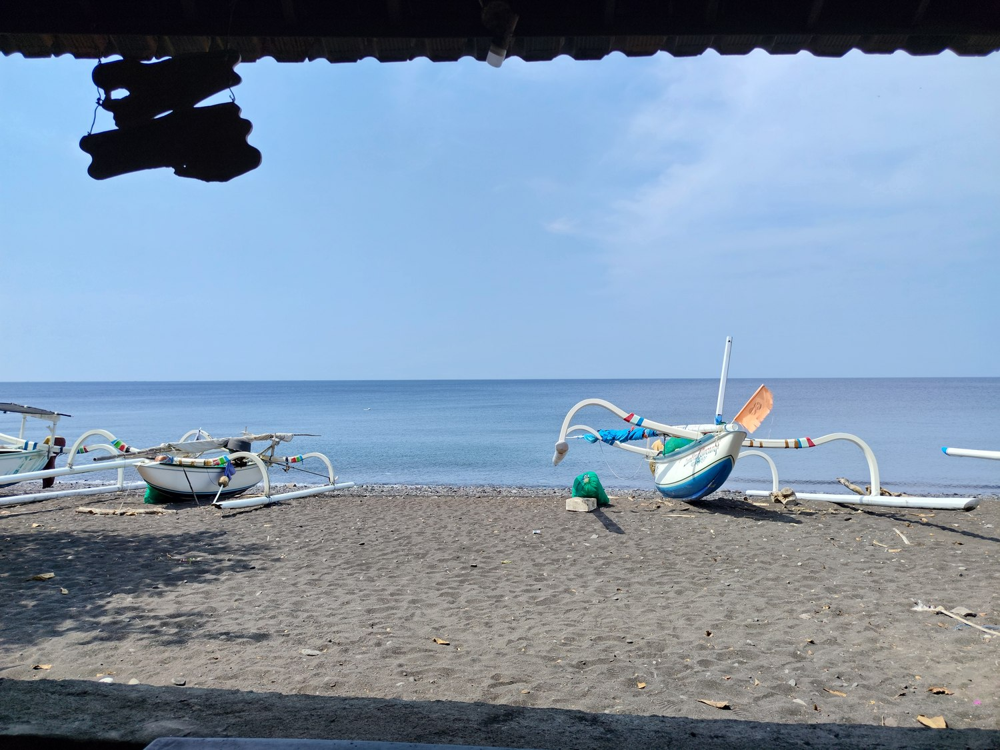
Die Jukung von Amed – am schwarzen Strand aufgereiht, jedes mit geschwungener Nase und zwei Auslegern.
In Amed liegen sie überall: schlanke, bunt bemalte Boote mit geschwungenen Nasen und zwei Auslegern, in langer Reihe am schwarzen Strand. Sie heißen Jukung. Und je länger ich sie anschaue, desto mehr erzählen sie.
Ein echtes Jukung ist kein Fabrikprodukt, sondern aus einem einzigen Baumstamm gehöhlt – traditionell aus Jackfruchtholz. Links und rechts sind zwei lange Bambus-Ausleger (die „Schwimmer") angebunden, früher mit Naturfaser-Schnur, heute oft mit Epoxid und Nylon. Diese Doppel-Ausleger machen das schmale Boot erstaunlich stabil – es kippt kaum, selbst in der Dünung. Gebaut wird meist ohne Bauplan, nach einem überlieferten Zahlen- und Augenmaß der Meister.
Und jetzt das Schönste – die Antwort auf die Frage: Fast jedes Jukung hat Augen am Bug. Sie gehören zum Gajah Mina, dem „Elefanten-Fisch" – einem Mischwesen aus Elefantenkopf und Fischleib aus der balinesischen Mythologie. Die Augen sollen böse Geister abwehren und dem Boot helfen, den Weg nach Hause zu sehen. Ein Boot, das sieht. Darum wirken die kleinen Jukung so lebendig, fast wie Tiere, die am Strand dösen.
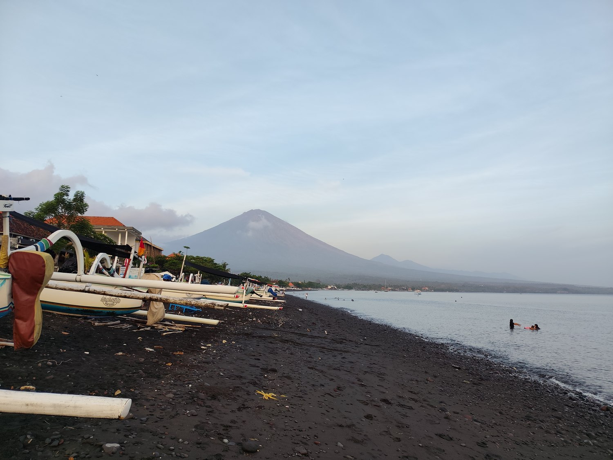
Im Morgenlicht unter dem Agung – eine ganze Flotte wartet aufs Meer.
Traditionell segeln sie mit einem Krallensegel (einem dreieckigen „Crab-Claw"-Segel aus buntem Tuch) und werden nach dem Fang einfach auf den Strand gezogen – einen Hafen gibt es nicht. Damit stehen die Jukung in einer uralten Reihe: Es ist dieselbe Ausleger-Bauweise, mit der die austronesischen Vorfahren einst halbe Ozeane überquert und die Inseln des Pazifiks besiedelt haben. Ein Stück Seefahrer-Geschichte, das jeden Morgen aufs Neue ins Wasser geschoben wird.
Und die leise Kehrseite: Echte Holz-Jukung werden selten. Geeignetes Bambus- und Bauholz ist teuer geworden, viele Boote sind heute aus Fiberglas und fahren mit Motor. Und statt Fischen tragen sie oft Schnorchler und Taucher hinaus – „Jukung-Dives" statt Fischzug. Die Boote bleiben, ihr Zweck wandelt sich.
Jedes dieser bunten Boote ist aus einem einzigen Baumstamm gehöhlt und trägt Augen, damit es den Heimweg sieht – ein Stück jahrtausendealter Seefahrerkunst, das heute oft Schnorchler statt Fische trägt. Wer hätte das gedacht?
🧂 Das schwarze Salz
Warum ist ausgerechnet der schwarze Sand von Amed das Geheimnis eines der edelsten Salze der Welt?
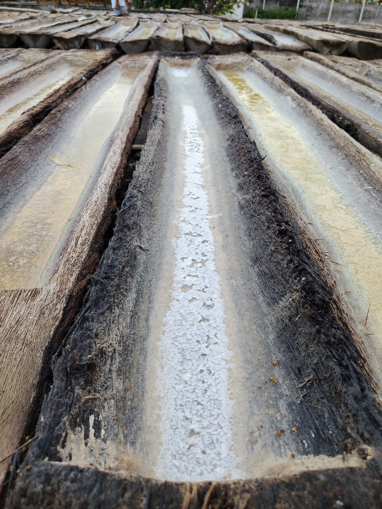
Darum geht es: Salzkristalle, die in der Rinne eines ausgehöhlten Palmstamms trocknen – fotografiert bei einem echten Salzbauern in Amed.
Der schwarze Vulkansand, der Amed so besonders aussehen lässt, ist nicht nur schön. Er ist das wichtigste Werkzeug für ein Handwerk, das es so nur hier gibt – und das mich staunen ließ: die Salzgewinnung.
Es beginnt mit Eimern voll Meerwasser. Die Salzbauern tragen es aus dem Meer und verteilen es über fein geharkten schwarzen Sand am Ufer. Und genau hier liegt der Trick: Der dunkle Vulkansand speichert die Sonnenwärme und hält das Wasser – es verdunstet schnell, und das Salz bleibt im Sand zurück. (Derselbe schwarze Sand stammt übrigens vom Agung, dessen Asche weiter oben in Sidemen die Reisfelder nährt – hier macht er Salz.)
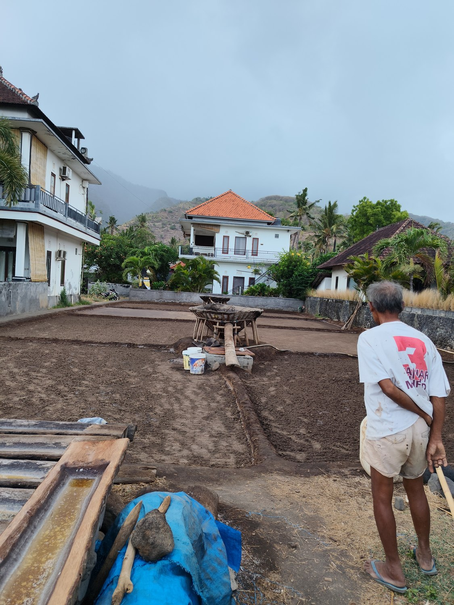
Die schwarzen Sandbeete: Hier wird das Meerwasser verteilt und später durchgefiltert – der Vulkansand als riesiger Salzfilter.
Dann wird der salzgetränkte Sand zusammengetragen, und man gießt noch einmal Meerwasser hindurch, das die Kristalle herauswäscht – so entsteht eine stark konzentrierte Sole. Diese Sole füllt man in flache Tröge aus ausgehöhlten Palmstämmen (die balinesischen palung), die in der Sonne liegen. Dort verdunstet der Rest – und übrig bleiben zarte, blütenartige Salzkristalle, von Hand geerntet. Keine Maschine, kein Zusatz: nur Sonne, Meer, schwarzer Sand und Holz.
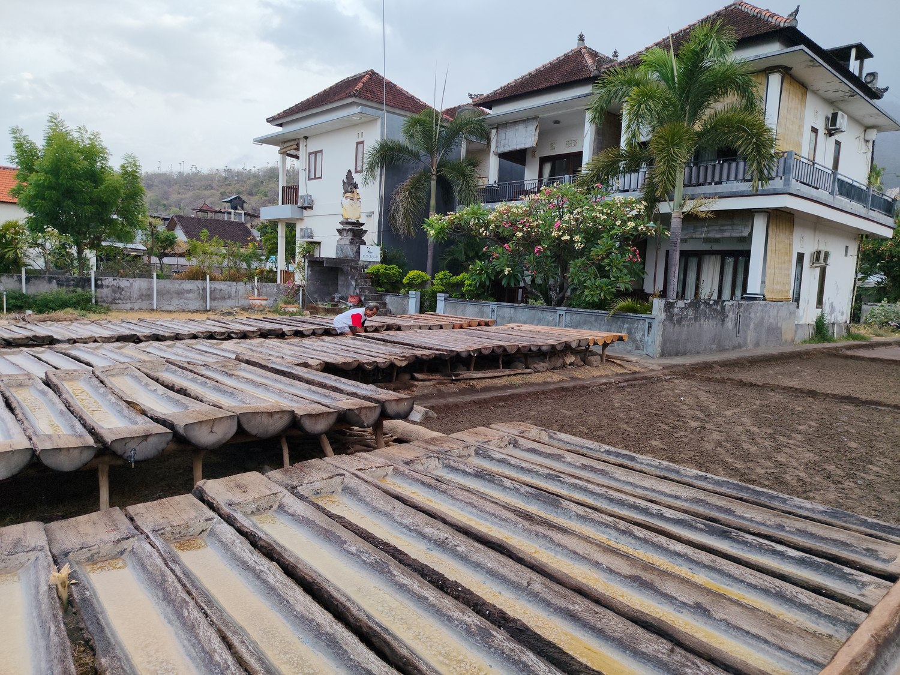
Reihe um Reihe: In den ausgehöhlten Palmstämmen (palung) trocknet die Sole langsam zu Salz.
Das Ergebnis ist ein Flockensalz von besonderer Reinheit, mineralreich und mild – von Köchen weltweit geschätzt. Seit 2015 ist „Garam Amed" (Amed-Salz) sogar mit einer geschützten Herkunftsangabe ausgezeichnet, ähnlich wie Champagner oder Parmesan: Nur Salz von genau hier, nach genau dieser Methode, darf so heißen. Getragen wird das von einem Zusammenschluss von rund zwanzig Salzbauern-Familien.
Und auch hier die ehrliche Kehrseite: Es ist Knochenarbeit. Stundenlang Wasser schleppen, in praller Sonne, am dampfend heißen schwarzen Sand, für einen kargen Lohn – die Franzosen nannten die Salzbauern einmal die „Galeerensträflinge des Salzes". Es sind immer weniger, die das noch machen; die Jungen zieht es zu leichteren Arbeiten, und das Land am Meer ist als Bauland begehrt.
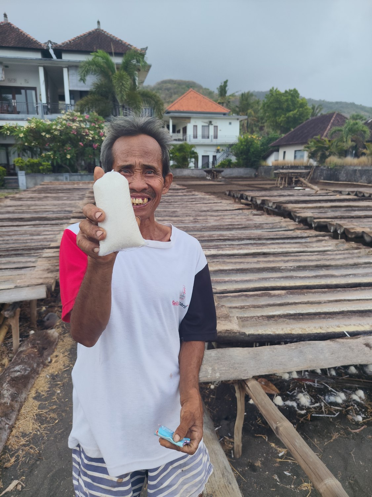
Der Salzbauer mit einem Säckchen seines Salzes – er hat mir gleich eines verkauft. 😊
Und ganz ehrlich: Dieser Salzbauer hat mir mit einem Lächeln sofort ein Säckchen verkauft – für mein allerletztes Bargeld. 😄 Ehrlicher und direkter kann man ein Mitbringsel kaum bekommen: vom Meer, über den schwarzen Sand, in meine Hand.
Aus nichts als Sonne, Meerwasser, schwarzem Vulkansand und ausgehöhlten Palmstämmen machen ein paar Familien eines der begehrtesten Salze der Welt – geschützt wie ein edler Wein. Wer hätte das gedacht?
🪸 Das Riff
Warum ist ein Korallenriff ein Tier, keine Pflanze – und warum wird es ausgerechnet weiß, wenn es stirbt?
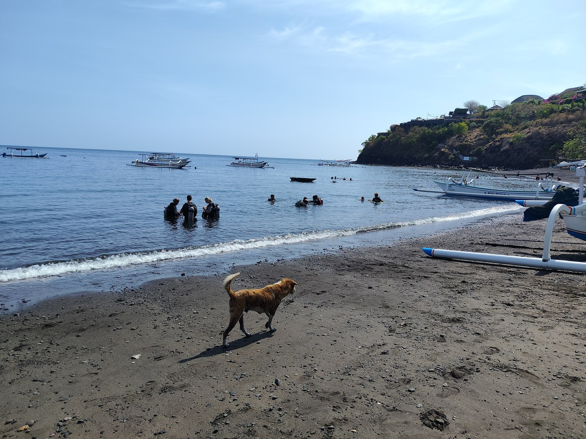
Die Bucht von Jemeluk: oben Taucher und Schnorchler – unten ein Riff, das Hilfe braucht.
Beim Schnorcheln in der Bucht von Jemeluk sah ich wunderbare Fische – aber der Boden darunter war grau, zerbrochen, tot. Die Korallen fast gänzlich zerstört. Das hat mich nicht mehr losgelassen: Was ist eine Koralle eigentlich? Und warum stirbt sie?
Die erste Überraschung: Eine Koralle ist weder Stein noch Pflanze, sondern ein Tier – genauer: eine ganze Kolonie winziger Tierchen, der Polypen, jeder wie eine Mini-Seeanemone. Gemeinsam bauen sie über Jahre und Jahrzehnte ein Kalkskelett – und daraus wächst, ganz langsam, das Riff. Ein Korallenriff ist also eine lebende Stadt aus Millionen kleiner Tiere, die manche Jahrhunderte alt ist.
Die zweite Überraschung betrifft die Farben. Die kommen gar nicht von der Koralle selbst, sondern von winzigen Algen, die in den Polypen wohnen. Es ist eine Partnerschaft: Die Algen betreiben Fotosynthese und füttern damit die Koralle, die Koralle gibt ihnen dafür ein sicheres Zuhause. Tier und Pflanze in einem – und die leuchtenden Farben eines gesunden Riffs sind in Wahrheit das Leuchten dieser kleinen Mitbewohner.
Und jetzt der traurige Kern – die Antwort auf die Frage: Wird das Wasser zu warm (oft reichen schon ein, zwei Grad über Wochen), gerät die Koralle in Stress und wirft ihre Algen hinaus. Ohne sie verliert sie beides auf einmal: ihre Farbe und ihre Hauptnahrung. Übrig bleibt das nackte weiße Kalkskelett, das durch das nun gläserne Gewebe schimmert. Das nennt man Korallenbleiche: ein hungerndes Tier, das seine eigenen Farben ausgespuckt hat. Kühlt das Meer rechtzeitig ab, können die Algen zurückkehren. Dauert die Hitze an, stirbt die Koralle – und zurück bleibt genau das graue Geröll, das ich gesehen habe.
Später habe ich ein Stück in die Hand genommen: kalkweiß, porös und zerbrechlich – fast wie ein kleiner Knochen. Und im Grunde ist es genau das: das Kalkskelett, das die winzigen Tiere zurücklassen, wenn das Leben aus ihnen gewichen ist.
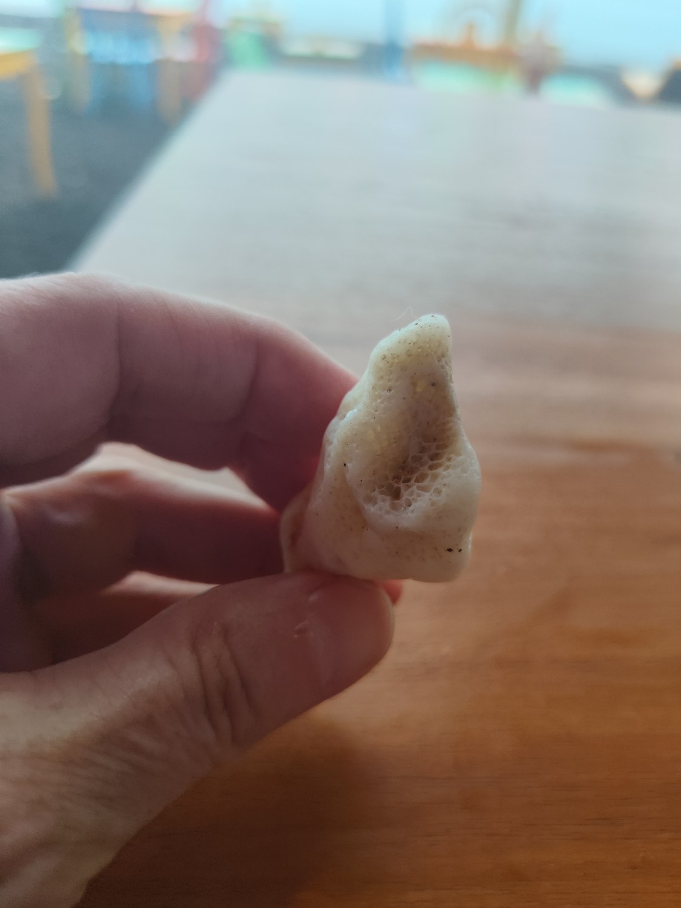
Ein Stück Koralle aus Jemeluk – kalkweiß und porös, fast wie ein Knochen. In Wahrheit das Skelett der winzigen Korallentiere.
Dazu kommt eine zweite Wunde, von Menschenhand: In Indonesiens Vergangenheit wurde vielerorts mit Dynamit und Gift gefischt – eine Explosion betäubt zwar die Fische, zerschlägt aber das Riff in Sekunden; Zyanid lähmt die Fische und vergiftet die Korallen. Dazu Anker, Abwässer, Sonnencreme, zu viele Füße. Ein Riff, das in Jahrhunderten wächst, kann so in Augenblicken zerbrechen.
Aber – und das ist das Hoffnungsvolle – man kann Korallen wieder pflanzen, fast wie einen Garten: Man bindet kleine Korallenstücke auf Gestelle, und sie wachsen weiter. In Bali steht in Pemuteran im Nordwesten sogar das größte Biorock-Riff der Welt – Stahlgerüste unter einem ganz schwachen Strom, an denen Korallen schneller wachsen; das Projekt läuft seit dem Jahr 2000 und bekam einen UN-Umweltpreis. Auch rund um Amed ziehen Tauchbasen neue Korallengärten groß. Es braucht Geduld, viel Geduld – aber ein Riff kann zurückkommen.
Ein Korallenriff ist kein Stein, sondern eine lebende Stadt aus winzigen Tieren, deren Farben von Algen in ihrem Inneren stammen – und wenn das Meer zu warm wird, spuckt das Tier seine eigenen Farben aus und erbleicht. Wer hätte das gedacht?
🚢 Das Wrack
Warum liegt vor Tulamben ein versunkenes Kriegsschiff – und was hat ein Vulkan damit zu tun?
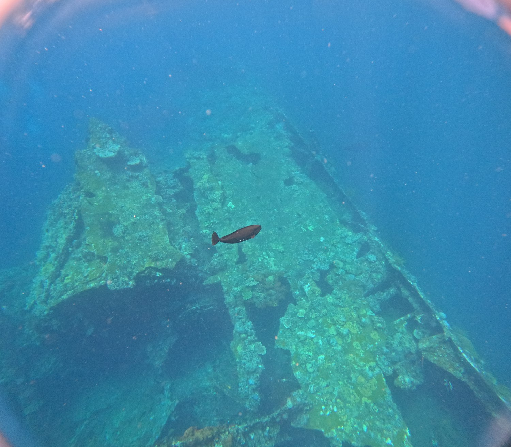
Das Wrack der USAT Liberty vor Tulamben – aus Stahl ist ein korallenbewachsenes Riff geworden.
In Tulamben bin ich über etwas Unerwartetes geschnorchelt: kein Riff, sondern ein ganzes Schiff. Ein Wrack aus dem Zweiten Weltkrieg, nur ein paar Meter vom Strand entfernt. Wie kommt ein Kriegsschiff hierher – und warum wimmelt es heute vor Leben?
Die USAT Liberty war ein amerikanischer Armee-Frachter. Im Januar 1942, mitten im Pazifikkrieg, war sie mit Eisenbahnteilen und Gummi unterwegs, als sie in der Lombok-Straße von einem japanischen U-Boot (der I-166) torpediert wurde. Schwer beschädigt und voll Wasser schaffte sie es nicht mehr bis zum Hafen – also setzte man sie absichtlich am Strand von Tulamben auf, um wenigstens die Ladung zu bergen. Dort lag sie dann, am Ufer, über zwanzig Jahre lang; die Dorfbewohner nutzten ihr Metall.
Und jetzt kommt der Vulkan ins Spiel. Als 1963 der Gunung Agung ausbrach – Balis heiliger Berg, derselbe, der in Sidemen die Reisfelder nährt und in Amed den schwarzen Sand macht –, erschütterten die Beben und Lavaströme die ganze Küste. Sie schoben das rostende Schiff vom Strand hinab ins Meer, wo es zerbrach und sich auf einem Sandhang ablegte: parallel zum Ufer, von gut fünf bis dreißig Metern Tiefe, nur wenige Meter vom Strand entfernt. 🌋
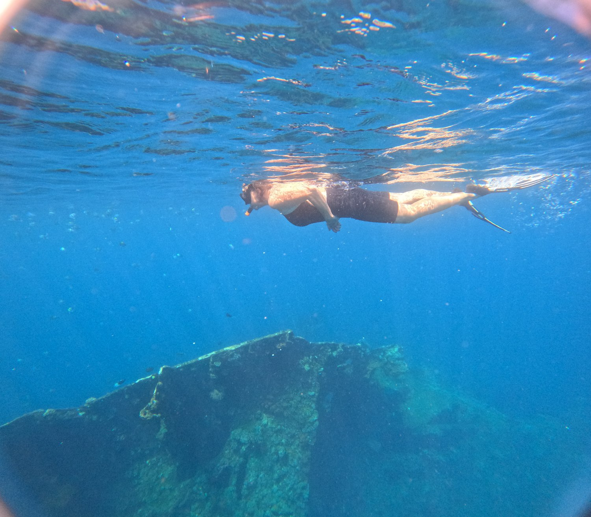
Von oben über dem Wrack: Weil es schon dicht unter der Oberfläche beginnt, kann man es sogar beim Schnorcheln sehen.
In den gut sechzig Jahren seither ist etwas Wunderbares passiert: Der Stahl wurde zum Riff. Korallen überzogen Rumpf und Aufbauten, und mit ihnen kam das Leben – Schwärme silberner Fische, Muränen, Schildkröten, dazwischen winzige, bunte Bewohner in jeder Ritze. Heute ist das Wrack der berühmteste Unterwasser-Ort Balis, direkt vom Strand aus erreichbar. Und weil seine oberen Teile so flach liegen, kann man es nicht nur ertauchen, sondern – wie ich – von oben beim Schnorcheln bestaunen.
Nur eines ist wehmütig: Der Stahl rostet langsam weiter, und jahrzehntelange Taucherbesuche beschleunigen das. Irgendwann wird das Schiff ganz in sich zusammensinken – aber das Riff, das es geschaffen hat, bleibt.
Ein Kriegsschiff, von einem U-Boot versenkt und von einem Vulkan ins Meer geschoben – und heute eine der lebendigsten Unterwasser-Städte Balis. Wer hätte das gedacht?
☕ Das Wort
Wie aus Koffie Kopi wird
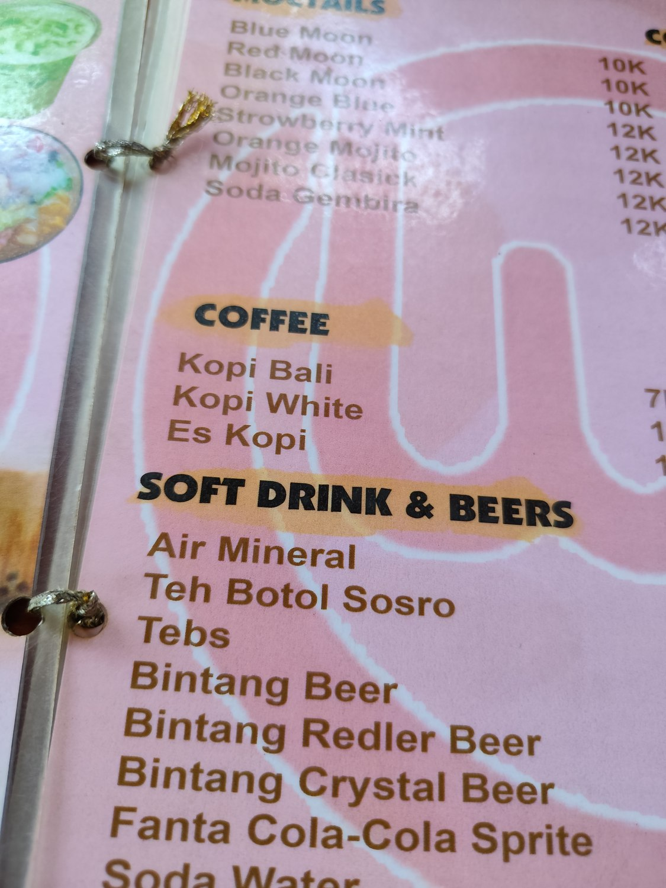
Auf jeder Karte in Amed steht es: Kopi. Wer das bestellt, sagt fast dasselbe Wort wie zu Hause.
Auf jeder Speisekarte hier lese ich es: Kopi Bali, Kopi White, Es Kopi. Und beim Kaffeetrinken am Strand kam mir ein Gedanke: Kopi klingt ja fast wie Kaffee – als wäre es dasselbe Wort. Ist es das? Und wenn ja, warum heißt es dann Kopi und nicht Koffi?
Die erste Überraschung: Es ist dasselbe Wort. Fast alle Wörter der Welt für Kaffee stammen aus einer einzigen Quelle – dem arabischen qahwa (قهوة). Von dort wanderte das Wort über das türkische kahve und das italienische caffè nach Europa: ins Niederländische als koffie, ins Deutsche als Kaffee, ins Englische als coffee, ins Französische als café. Dieselbe Wurzel, überall ein bisschen anders ausgesprochen.
Und nach Indonesien? Das Wort kam mit den Niederländern, die hier über 300 Jahre lang Kolonialmacht waren. Aus ihrem koffie wurde das indonesische kopi. Ein Nachbar desselben Stammbaums also – nur über Amsterdam statt über Wien zu uns gereist.
Jetzt zu deiner Frage – warum Kopi und nicht Koffi? Das ist das Hübscheste daran: Das alte Malaiisch, die Grundlage des Indonesischen, kannte den Laut „f" gar nicht. Fremde Wörter mit „f" wurden darum ganz regelmäßig mit einem „p" ausgesprochen. Deshalb wurde aus koffie → kopi. Und es ist kein Einzelfall: Aus dem niederländischen koffer (Koffer) wurde koper, aus dem arabischen fikr (Gedanke) wurde pikir (denken). Dazu kommt: Die niederländische Endung -ie wird „-i" gesprochen – aus koffie wird so lautlich ganz folgerichtig ko-pi.
Und das Schönste: Dieselbe Neigung lebt bis heute. Hier auf Bali höre ich Einheimische „Pishing" für fishing sagen und „Pull Moon" für full moon – das „f", das mitten im Alltag zum „p" wird. Genau genommen ist das nicht derselbe sprachgeschichtliche Vorgang wie damals – aus koffie wurde ein festes indonesisches Wort, fishing dagegen wird nur im Moment des Sprechens angepasst –, aber beide entspringen derselben Wurzel: einem „f", das dem heimischen Klanggefühl fremd ist und darum zum „p" rutscht. (Zugegeben, „Pull Moon" hat fast etwas Poetisches – als würde der Mond herangezogen. 🌕)
Und die zweite Hälfte der Geschichte ist fast noch schöner: Die Niederländer brachten nicht nur das Wort, sondern auch die Kaffeepflanze. Ab dem späten 17. Jahrhundert ließ die Handelskompanie VOC auf Java Kaffee anbauen – und die Insel wurde zu einem der ersten großen Kaffee-Gebiete außerhalb Arabiens. So berühmt, dass eine Tasse Kaffee im Englischen bis heute scherzhaft „a cup of Java" heißt. (Den verrücktesten Nachkommen dieses Anbaus kennst du schon: den Luwak-Kaffee. ☕)
Wenn du auf Bali ein Kopi bestellst, sagst du fast dasselbe wie „Kaffee" zu Hause – beide tragen denselben uralten arabischen Namen. Nur dass das „f" auf dem Weg durch Indonesien zum „p" geworden ist. Wer hätte das gedacht?
👶 Die Namen
Warum heißen auf Bali so viele Menschen gleich – Wayan, Made, Nyoman, Ketut?
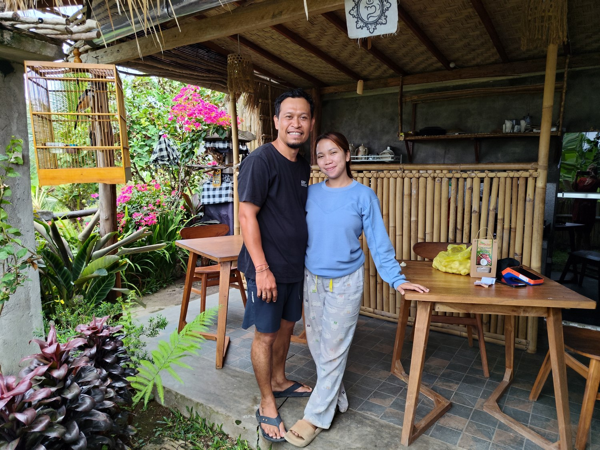
Wayan und Ami in ihrem Homestay in Sidemen. „Wayan" ist kein Zufall – es heißt: erstgeborenes Kind.
Mir fiel es schon nach wenigen Tagen auf: Ich begegne immer wieder denselben Namen. Mein Gastgeber heißt Wayan, mein Fahrer Komang, mein Tempel-Guide Nyoman, und der nächste freundliche Mensch stellt sich als Made vor. „Schon wieder ein Wayan?", dachte ich. Zufall? Nein – dahinter steckt ein wunderbar einfaches System.
Auf Bali sucht man sich den Vornamen nicht aus. Er richtet sich nach der Reihenfolge der Geburt – und zwar für Jungen und Mädchen gleich:
• Das erste Kind heißt Wayan (oder Putu, Gede).
• Das zweiteMade (oder Kadek, Nengah).
• Das dritteNyoman (oder Komang).
• Das vierteKetut.
Dass diese Namen wirklich geschlechtslos sind, habe ich selbst erlebt: Ich bin schon männlichen und weiblichen Komangs begegnet – derselbe Name, einmal für einen Mann, einmal für eine Frau.
Und wenn eine Familie fünf Kinder hat? Dann fängt es einfach wieder von vorne an: Das fünfte Kind wird oft „Wayan Balik" genannt – Wayan noch einmal. Es kann also tatsächlich zwei Wayans unter einem Dach geben. 😊
Dazu kommt ein kleines Vorzeichen: Männer tragen meist ein „I" vor dem Namen, Frauen ein „Ni" – aus Wayan wird dann I Wayan oder Ni Wayan. (Bei manchen Familien stehen davor noch alte Adels- und Kasten-Titel wie Ida Bagus oder Anak Agung – aber der Reihenfolge-Name trägt fast jeder, über die ganze Insel hinweg.)
Was die Namen bedeuten, wird unterschiedlich erzählt – da bleibe ich lieber vorsichtig. Oft heißt es, sie trügen ihre Ordnung schon in sich: Wayan von einem Wort für „der Älteste", Made von „die Mitte", und Ketut werde liebevoll als „der Kleine, der hinterherkommt" gedeutet – wie die letzte kleine Banane am Ende der Staude. Hübsche Bilder; ob sie sprachlich wirklich stimmen, ist nicht sicher.
Für mich löste sich damit ein kleines Rätsel: Mein ganzer balinesischer Freundeskreis liest sich plötzlich wie diese Liste selbst – Wayan, Made, Nyoman, Komang: ein Erst-, ein Zweit- und zwei Drittgeborene, alle auf einmal an meinem Weg. Kein Wunder, dass Wayan lachend sagte: „Ja, wir sind überall."
Auf Bali verrät dein Vorname, als wievieltes Kind du geboren wurdest – und beim fünften beginnt das Zählen von vorn. Kein Zufall also, dass man überall einem Wayan begegnet. Wer hätte das gedacht?
🌸 Der Name
Was bedeutet eigentlich „Bali"?
🌸
Wochenlang reise ich nun über diese Insel – und erst spät kam mir die naheliegendste Frage: Was bedeutet eigentlich ihr Name? „Bali" sagt sich so leicht. Aber woher kommt das Wort?
Der Name ist uralt. Er steht schon auf der Blanjong-Säule bei Sanur, einem Steinpfeiler aus dem Jahr 914 – der ältesten datierten Inschrift Balis. Dort taucht die Insel als „Bali Dwipa" auf. Dwipa ist Sanskrit und heißt schlicht „Insel". Bleibt also die Frage: Was heißt Bali?
Die am häufigsten genannte Deutung ist eine schöne: Im Sanskrit bedeutet „bali" so viel wie Opfergabe, Opfer, Tribut. „Bali Dwipa" wäre dann die „Insel der Opfergaben".
Und genau das sieht man hier an jeder Ecke: die kleinen geflochtenen Körbchen, die canang sari, mit Blüten, Reis und einem Räucherstäbchen – morgens frisch gelegt auf jede Türschwelle, jeden Ladentisch, jedes Armaturenbrett, sogar auf den Sitz des Motorrollers. Eine Insel, deren Name vielleicht „Opfergabe" bedeutet – und die jeden Morgen von Millionen kleiner Opfergaben bedeckt wird.
Ganz sicher ist die Herkunft allerdings nicht – da bleibe ich vorsichtig. Manche Sprachforscher lesen das Wort lieber als „valī", „Welle", und machen daraus die „Insel der Wellen". Und in der alten indischen Ramayana-Dichtung gibt es einen König namens Bali (Vali). Welche Spur die richtige ist, lässt sich nicht beweisen – die „Insel der Opfer" wird am häufigsten erzählt, bleibt aber auch nur eine Deutung.
Die Insel der Götter trägt vielleicht einen noch leiseren Namen: die Insel der Opfergaben. Und jeden Morgen legen Millionen Hände ein frisches Körbchen hin, als wollten sie den Namen bestätigen. Wer hätte das gedacht?
🛵 Die Motorbikes
Warum fährt auf Bali fast alles auf zwei Rädern?
🛵
Das Erste, was einem auf Bali auffällt, noch vor den Tempeln: Die Straße gehört dem Motorroller. Er strömt in dichten Schwärmen durch jede Gasse – und trägt auf dem Sattel alles, was ein Leben so braucht.
Die Zahl ist kaum zu glauben: Auf Bali sind rund 4,76 Millionen Motorräder angemeldet (Stand 2025) – bei etwa 4,4 Millionen Einwohnern. Das heißt: Es gibt hier mehr Motorräder als Menschen. Vom Baby bis zur Großmutter käme rechnerisch für jeden eines – und ein paar blieben sogar übrig.
Der Roller ist hier kein Spielzeug, sondern der Lastesel der Insel. Ich habe darauf schon gesehen: eine ganze Familie zu viert, den Wocheneinkauf, einen Stapel Eierkartons, einen Kleiderschrank, ein quer geladenes Surfbrett, einen Hund, der seelenruhig auf dem Trittbrett steht – und ganz oben, auf dem Sitz, das frische Opferkörbchen für den Tag. Ein kleines, fahrendes Zuhause.
Der Grund ist einfach: In den engen Dorfstraßen, im dichten Tempelverkehr und bei den Spritpreisen ist das Motorrad billig, wendig, und ein Parkplatz findet sich immer. Autos stauen sich – der Roller findet überall durch.
Und doch gibt es einen einzigen Tag im Jahr, an dem dieser endlose Strom vollständig stillsteht: Nyepi, den balinesischen Tag der Stille zum Saka-Neujahr. 24 Stunden lang darf niemand auf die Straße – kein Licht, kein Lärm, keine Fahrt – und selbst der einzige internationale Flughafen der Insel schließt für einen ganzen Tag. Die Millionen Roller, die nie stillstehen, stehen still. Dann wird es auf Bali so leise, dass man das Meer hört.
Der Roller trägt auf Bali alles – eine Familie, einen Schrank, die Opfergaben des Tages – und steht doch an einem einzigen Tag im Jahr vollkommen still. Wer hätte das gedacht?